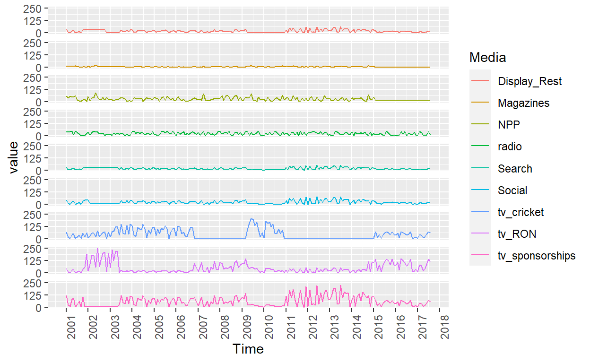
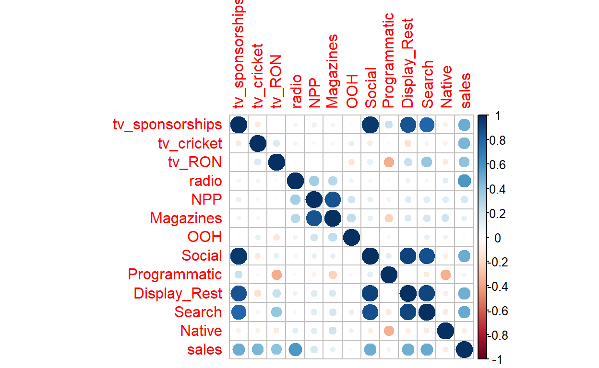
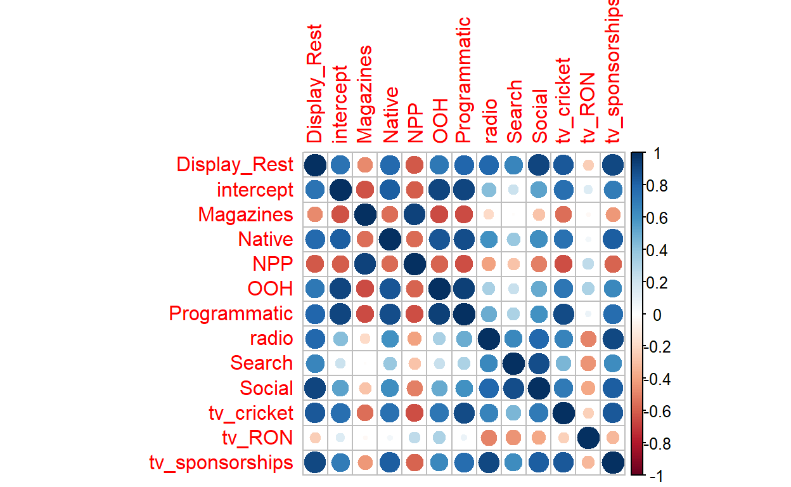
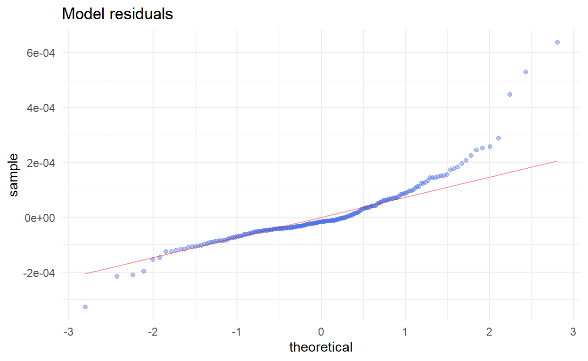
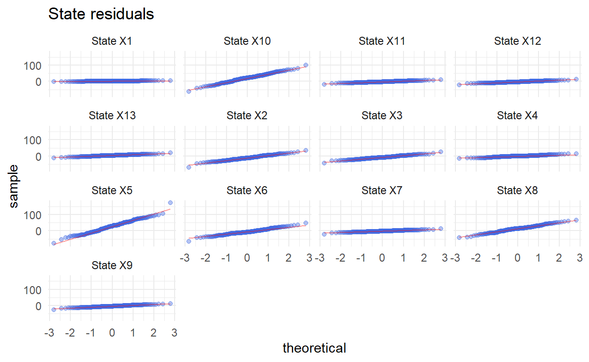

In this post we discuss the application of the Dynamic Linear Regression model to Media Mix Modeling. To fit the model we will use the R package MARSS.
Marketers are generally interested in building models that link different marketing variables such as sales activities, operations and external factors, to changes in consumer behavior, such as acquisition, sales, revenue, and retention. Once the model are implemented these can then support the development of forwardlooking business simulations and optimization exercises. When only advertising variables are included in the model this practice is generally called media mix modeling.
One of the models most used in practice for media mix modeling is the linear regression model. Once the regression is fitted and unknown parameters are estimated, it is possible to infer the marginal effect that the different explanatory variables have on the response variable. One limitation of the plain linear regression model is that the estimates of the parameters remain constant over time. This assumption might be limited in some context, for example in marketing, where it is well known that the preferences of the customers or the penetration of a certain media evolves with time.
In order to overcome this limitation the Dynamic Linear Regression Model (DLM), which allows for time varying parameters represent a powerful alternative to plain linear regression. Once the DLM is formulated in State Space form it is possible to estimate the parameters in a dynamic way and conduct a series of inferential procedures.
A Dynamic Linear Regression (DLR) model is a linear regression model where the parameters are allowed to change over time according to a specific stochastic process. A natural representation of the DLM is the state space form, which represent a general representation for many other statistical models. In its most general form a state space model is defined by the following two equations
$$ \[\begin{aligned} x_{t} & =B_{t} x_{t-1}+ u_{t}+ C_{t} c_{t}+ G_{t} w_{t}, & \quad w_{t} \sim MVN\left(0, Q_{t}\right) \\ y_{t} & =Z_{t} x_{t}+a_{t}+D_{t} d_{t}+H_{t} v_{t}, & \quad v_{t} \sim MVN\left(0, R_{t}\right) \\ \end{aligned}\]$$
where \(x_{1} \sim MVN(\pi, \Lambda)\) or \(x_{0} \sim MVN(\pi, \Lambda)\). Here \(y\) and \(x\) can be multivariate series and the index \(t\) and denotes that the matrix are allowed to change over time. The different matrices are in generally not know and are related to a series of unknown parameters that need to be estimated. Estimation of the unknown parameters and the related inference are obtained by running the Kalman Filter see Durbin and Koopman (2012) or Andrew C. Harvey and Fernandes (1989) for a detailed description.Given a standard linear regression model
\[ y_{i} = x'_{i} \beta + \epsilon_{i} \quad \epsilon_{i} \sim N(0, \sigma^{2}) \]
where \(y_{i}\) is a scalar variable, \(x_{i}\) is a $ k $ vector of regressors, \(\beta\) is a \(k \times 1\) vector of unknown parameters and \(\epsilon_{i}\) is the error term, a dynamic linear model is obtained by allowing the paramters \(\beta\) to evolve over time thorough a prescribed model which describes the evolution of \(\beta\) over time. That is
\[ \begin{aligned} y_{i} & = x'_{i} \beta_{t} + \epsilon_{t} \quad & \epsilon_{t} \sim N(0,\sigma^{2})\\ \beta_{t}& = f(\beta_{t-1}) + v_{t} \quad & v_{t} \sim N(0,R) \end{aligned} \] Several specifications of \(f(\cdot)\) can be specified but here we will consider the cases where \(f(\cdot)\) is a linear function. Following the state space specification () the dynamic linear regression model can be easily casted in state space form. The unknown parameters becomes the state of the system and the smoothed states obtained with the Kalman Filter represent the estimates of the parameters conditioned on all of the observed data. Depending on the specification of the function \(f(\cdot)\) different models can be identified. The two most simplest model are obtained when a random walk process or an autorgressive process are adopted to describe the evolution of \(\beta_{t}\)
In this case each \(\beta_{t}\) is assumed to be non stationary and it is modeled as a random walk. That is,
\[\begin{aligned} y_{t} & = \underbrace{\begin{pmatrix} 1 & x_{1} & \cdots & x_{k} \end{pmatrix}_{t}}_{B_{t}} \underbrace{ \begin{pmatrix} \beta_{1} \\ \beta_{2} \\ \vdots \\ \beta_{k+1} \end{pmatrix}_{t}}_{x_{t}} + w_{t} \\ \underbrace{\begin{pmatrix} \beta_{1} \\ \beta_{2} \\ \vdots \\ \beta_{k+1} \end{pmatrix}_{t}}_{x_{t}} & = \underbrace{\begin{pmatrix} 1 & 0 & \cdots & 0 \\ 0 & 1 & \cdots & 0 \\ \vdots & \vdots & \ddots & \vdots \\ 0 & 0 & \cdots & 1 \\ \end{pmatrix}_{t}}_{Z_{t}} \underbrace{\begin{pmatrix} \beta_{1} \\ \beta_{2} \\ \vdots \\ \beta_{k+1} \end{pmatrix}_{t-1}}_{x_{t-1}} + \underbrace{\begin{pmatrix} v_{1} \\ v_{2} \\ \vdots \\ v_{k+1} \end{pmatrix}_{t}}_{v_{t}} \end{aligned}\]When a stationarity assumption is necessary on the parameters \(\beta_{t}\) the autoregressive process of order one represent the simplest form of dynamic linear model.
\[\begin{aligned} y_{t} & = \underbrace{\begin{pmatrix} 1 & x_{1} & \cdots & x_{k} \end{pmatrix}_{t}}_{B_{t}} \underbrace{ \begin{pmatrix} \beta_{1} \\ \beta_{2} \\ \vdots \\ \beta_{k+1} \end{pmatrix}_{t}}_{x_{t}} + w_{t} \\ \underbrace{\begin{pmatrix} \beta_{1} \\ \beta_{2} \\ \vdots \\ \beta_{k+1} \end{pmatrix}_{t}}_{x_{t}} & = \underbrace{\begin{pmatrix} \phi_{11} & 0 & \cdots & 0 \\ 0 & \phi_{21} & \cdots & 0 \\ \vdots & \vdots & \ddots & \vdots \\ 0 & 0 & \cdots & \phi_{k1} \\ \end{pmatrix}_{t}}_{Z_{t}} \underbrace{\begin{pmatrix} \beta_{1} \\ \beta_{2} \\ \vdots \\ \beta_{k+1} \end{pmatrix}_{t-1}}_{x_{t-1}} + \underbrace{\begin{pmatrix} v_{1} \\ v_{2} \\ \vdots \\ v_{k+1} \end{pmatrix}_{t}}_{v_{t}} \end{aligned}\]The data contains sales (expressed in thousand of units) and the corresponding advertising budget (expressed in thousand of dollars) for several media. The data ranges from 2001/01/01 to 2017/08/01 for a total of 200 observations.
We begin by loading the packages used for the analysis
After loading the data that in my case was on a desktop folder we begin the analysis looking at the different time series.
advertising %>%
select(-c("Native","Programmatic","OOH","sales")) %>%
pivot_longer(cols = -c("Time"), names_to = "Media") %>%
ggplot(aes(x = Time, y = value, color = Media, )) +
geom_line() +
facet_grid(rows = vars(Media))+
scale_x_date(date_breaks = "1 year",date_labels = "%Y") +
theme(strip.background = element_blank(),
strip.text = element_blank(),
axis.text.x = element_text(angle = 90)) +
scale_y_continuous(breaks = seq(0, 250, by = 125))

A time series plot reveals that there is a great difference between the budget allocated to the different media. TV represents the media to which more money are allocated and the investments are divided depending on the TV program. Moreover, it emerges clearly that when some media are used other are stopped. In particular overt the period 2009-2011 no budget was allocated to Search and social media but a high investment was allocated to tv_cricket.

From the correlation matrix it appears that sales are positively correlated with the budget allocated to TV, Radio, Social, Display rest and Search while there is no apparent linear relationship with the other media. TV and Radio represent the classical media more correlated with sales, while Social, Display_Rest and Search are the modern media with the highest correlation. As it is evident from the correlation matrix there is a strong positive correlation between the budget allocated to different media. For example there is an high positive correlation between Social, tv_sponsorship, Display_Rest and Search, meaning that when the budget in increased in one of these media is increased also in the others.
# convert the data into a matrix
response <- matrix(advertising$sales, nrow = 1)
# covariates matrix (k x TT)
covariates <- advertising %>% select(-c("Time","sales"))
covariates <- t(covariates)
# number of state = # of regression params (slope(s) + intercept)
m <- 1 + 12
# obtain the total number or observations
TT <- length(response)
Next, we proceed to specify the matrices needed for fitting the dlm model
# STATE EQUATION
# specify the B matrix
B <- diag(m)
# specify B matrix for AR1 states
diag(B)[2:13] <- paste("b",2:13, sep = "")
# specify remaining matrices
U <- matrix(0, nrow = m, ncol = 1)
Q <- "unconstrained"
# OBSERVATION EQUATION
Z <- array(NA, c(1, m, TT)) # NxMxT; empty for now
Z[1, 1, ] <- rep(1, TT) # Nx1; 1's for intercept
Z[1, 2:13, ] <- covariates # Nx1; regr variable
A <- matrix(0) # 1x1; scalar = 0
R <- matrix("r") # 1x1; scalar = r
# initialize thate vector
inits.list <- list(x0 = matrix(0, nrow = m))
# set parameters for optimizer
cntl.list <- list(minit = 200, maxit = 20000)
# list of model matrices & vectors
mod.list <- list(B = B, U = U, Q = Q, Z = Z, A = A, R = R)
And finally we fit the model.
# dlm with autoregressive states
dlr <- MARSS(response, inits = inits.list, model = mod.list,
control = cntl.list, silent = TRUE)
Error in chol.default(denom) :
il minore principale di ordine 7 non è definito positivoWe start by examining the smoothed states in Figure 1.
Figure 1: Smoothed states
Looking at the smoothed states it appears that there is an high variation in the states. The intercept, which represent the average volume of sales in absence of advertising activities in sales shows an increasing trend. Display_Rest, Native, OOH, Programmatic Radio and Magazines shows an increasing marginal effect on the quantity of units sold. Programmatic being the one with the highest marginal effect. The interpretation of the estimated negative values associated to the budget allocated to a particular media has many interpretations. It might indicate that for that period the particular activity performed on that media was not appreciated by the customer, or again it might indicate that the customer got bored or not interested in that media and using it as advertisement produced the opposite effect on sales.

The correlation structure of the states is of complex interpretation. However the important thing is that it highlights the fact that there exhists synergies between some medias. For example when the marginal effect of the budget allocated to tv_sponsorship increases we expect that also the marginal effect allocated to budget will increase. Apart from the theoretical assumptions on the regression parameters one of the main advantages in adopting a state space representation is the possibility of producing forecasts as soon as new data is available. By running the Kalman filter, it is in fact possible to produce the one step ahead forecasts, \(\hat{y}_{t+1|t}\), in an iterative fashion. The one step ahead predictions obtained with the fitted dynamic linear regression are reported in Figure ??.
We conclude the analysis by inspecting the residuals plot, in order to identify violation to the underlying model assumptions
MARSSresiduals.tT reported warnings. See msg element or attribute of returned residuals object.MARSSresiduals.tT reported warnings. See msg element or attribute of returned residuals object.Figure 2: Fitted residuals
Figure 3: State residuals
Both the model and the state residuals appear to be well dispersed with no particular patterns that may indicate autocorrelation or cyclical behavior. Both in the model and in the state residuals plot some outliers can be identified.


Finally, the inspection of the qqplots reveal that there is no clear departure from normality in the state while the model residuals appear to have heavier tails than a normal distribution.